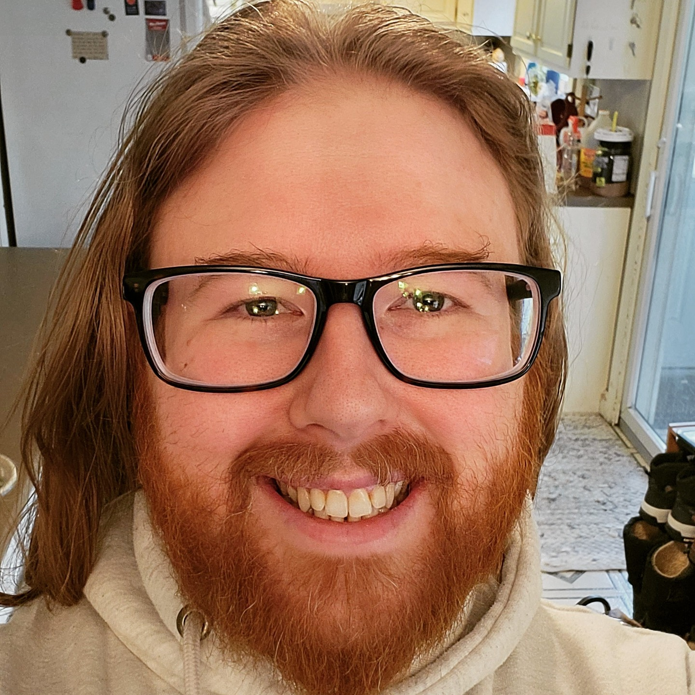
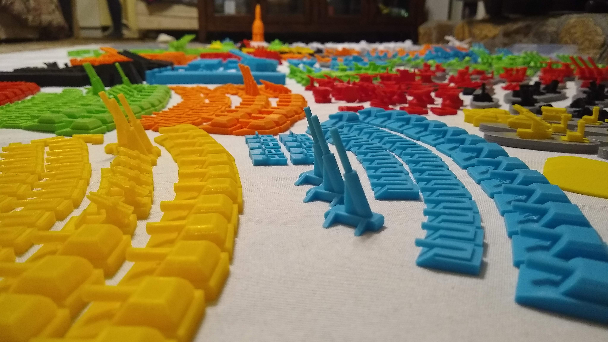
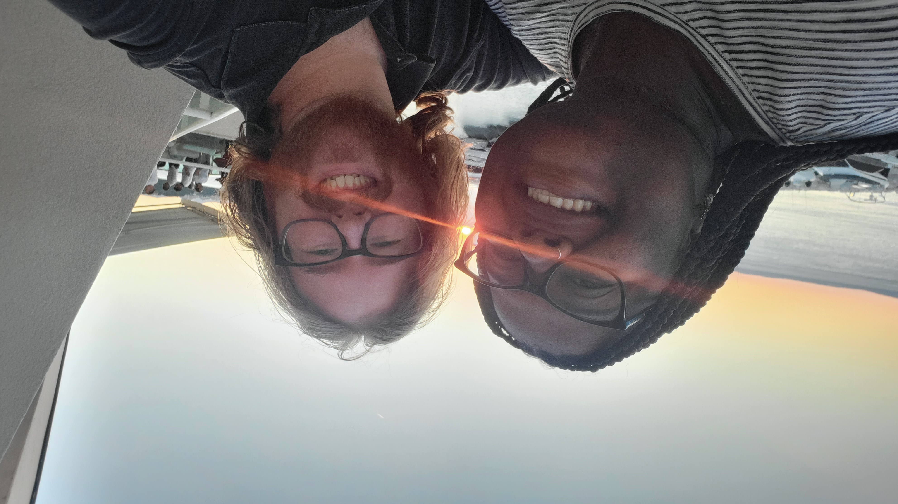
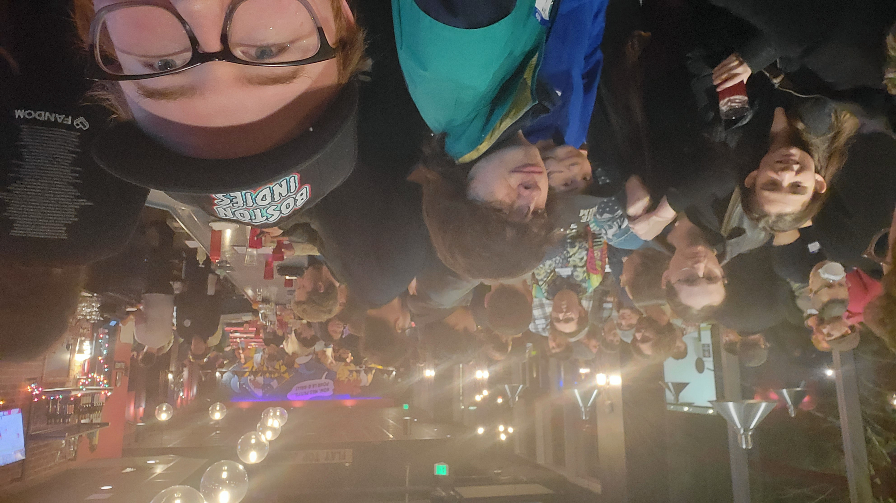
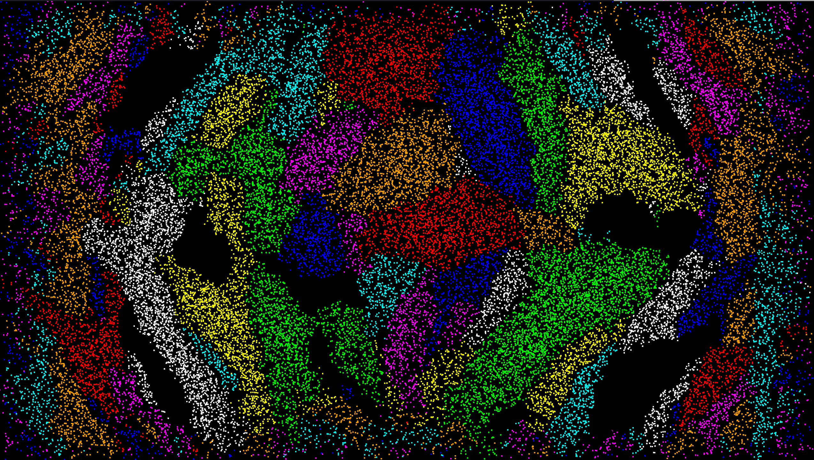
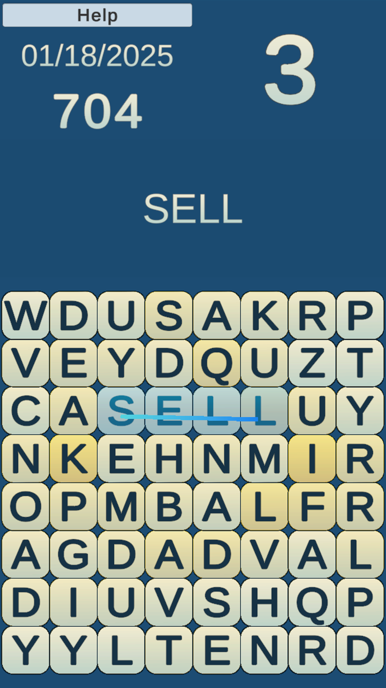

About Me
I am Mark Aldrich Jr from North Reading, Massachusetts! I've been an active maker and creator since 2016 when I got my first 3d printer. I was designing a tabletop war game, but found the cost of getting the parts made was less than just buying an Ender 3 and some plastic. This lead into me crafting parts that needed electronics, a coding education to program those electronics, and all that came after that!
After a major life change, I left my job as an automotive shop mechanic and started learning everything I could, from app development to welding! I've always had a healthy curiosity about how things worked and were made, and I've always played video games, so being a game developer was a natural fit. The past half a decade has been spent learning that craft on my own, eventually leading me to join Boston Game Dev, a collection of creatives coalescing around a common cause, crafting controllable character quests. I've helped them run events while working on my games, studying AI, and building new things!
These days, I am mostly dedicated to working on Stone and Struggle, the Game of Games, The Big One, the rpg game developers only whisper about in their dreams. It is, I believe, going to be my life's work. In between updates, I work on smaller games, like 2 Kings 2, a hack and slash game where you play as a bear, Noblemen, a couch-competitive party RTS, and Town Line, an automation town builder. I've also always wanted to be a writer, and have started working on a secret project you won't find me talking about here...
If you've read this far, you already know I don't do things halfway. A decade of solo game development teaches you a lot about structuring complexity, communicating ideas visually, and figuring out what actually matters. I'm drawn to roles where analytical thinking and creative problem-solving overlap, the kind of work where you're building something to be understood, not just completed. If that sounds like someone you need, let's talk.
Where I Create
Gallery





